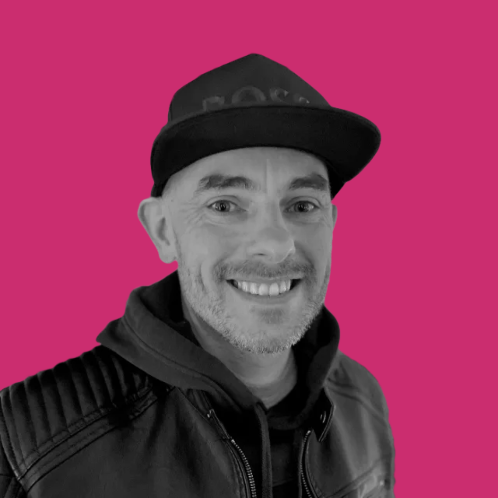

— Full-stack developer
Karl Horning
Fast. Accessible.
No fluff.
Full-stack developer with a front-end focus. I build things that work for everyone — fast, accessible, no loading screens. Previously backend engineer at Learnlight, where I helped keep a GraphQL API running smoothly for 700,000+ learners.

Before writing code, I spent six years teaching online — over 10,000 hours of it. I watched slow APIs, broken accessibility, and fragile UX get in the way of real people trying to learn. That experience is still the lens I build through.
I'm currently a Learning Technologist at Imperial College London, leading technical evaluation of enterprise LMS platforms for a major digital infrastructure project. Before that, I spent three years as a backend engineer at Learnlight, building the GraphQL API for a platform used by 700,000+ learners across 180 countries.
Based in London · Open to remote
-
View ↗
Learnlight Platform
Built and optimised the GraphQL API for a global language-learning platform — 700,000+ registered learners across 180 countries. Resolved N+1 query issues, cutting duplicate database calls from 36 to 1 per request: a 70% performance gain.
-
View ↗
karlhorning.dev
This portfolio. A static Next.js site with Playwright + axe-core accessibility testing built in and perfect Lighthouse scores across mobile and desktop.
-
View ↗
Transform Text
Browser extension for quick text transformation. Right-click any selected text for 13 conversions — case changes, coding conventions, title formats. Available on Firefox, Chrome, and Edge.
-
View ↗
Canvas Content Styling Guide
A practical reference for styling Canvas LMS course pages with HTML and CSS — written for educators with no coding experience. All examples are copy-paste ready.
-
View ↗
Colour Contrast Checker
A progressive web app for checking WCAG colour contrast ratios. Built because accessible design starts with colour — and the tools for checking it should be fast and frictionless.